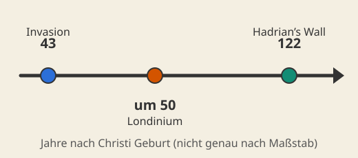

Die Römer in Britannien
Mit einem KI-Tutor lernen
Ein KI-Tutor erklärt dir diese Seite und hilft dir bei den Aufgaben. Wähl deinen Assistenten:
Mit Claude öffnen Mit ChatGPT öffnen Mit Mistral Vibe öffnen
Du nutzt dein eigenes Konto beim Anbieter. Der Assistent ist kein Angebot von lernapps.net: lernapps liefert nur Inhalte und Aufgaben. Die Wahl gilt für alle Seiten, nur auf diesem Gerät.
Eine alte Stadt

Von links: Mr Hill (graue Haare) und Ellie (roter Pferdeschwanz).
Quelle: eigene Zeichnung. Lizenz: CC-BY-4.0.Ein Tag in London. Mr Hills Klasse steht vor einer alten Mauer. Peter ist heute nicht dabei, Sophie schreibt ihm später eine Nachricht. Mr Hill sagt: „London is almost 2,000 years old.“ Das heißt: London ist fast 2000 Jahre alt. Die ersten, die hier eine Stadt bauten, waren die Römer. Sie nannten die Stadt Londinium.
Aufgabe
Lösung
Die Römer kamen nach Britannien. richtige Antwort
came ist die Vergangenheit von come. Der Satz erzählt, was früher geschah.
Die Römer kommen morgen nach Britannien.
Für morgen würdest du come oder will come sagen. came erzählt von früher.
Die Römer wohnen heute in Britannien.
wohnen heißt live. Der Satz sagt, dass die Römer irgendwohin kamen.
came ist die Vergangenheitsform von come. Mr Hill erzählt, was vor langer Zeit geschah.
Das kannst du danach: Du erzählst, was die Römer in Britannien zurückließen, zum Beispiel in London, im Norden Englands und in Bath. Dafür brauchst du vier Verben in der Vergangenheit.
Was die Römer hinterlassen haben
Die Römer kamen im Jahr 43 nach Britannien. Um das Jahr 50 entstand an der Themse die Stadt Londinium, ein wichtiger Hafen und ein Ort für Handel. Im Jahr 122 begann der Bau einer langen Mauer. Der Zeitstrahl zeigt die drei Marken.

Zeitstrahl: Die Römer in Britannien (nicht genau nach Maßstab, die Abstände stimmen nicht mit den Jahren überein).
Quelle: eigene Zeichnung. Lizenz: CC-BY-4.0.Drei Orte zeigen, dass die Römer da waren: Londinium an der Themse, Hadrian’s Wall mit Forts und Türmen und die Roman Baths im Südwesten Englands. Die Römer nannten den Ort der Bäder Aquae Sulis. Die Karte zeigt, wo die drei Orte liegen.

Schemakarte, nicht genau nach Maßstab: Orte der Römer in England. Norden ist oben.
Quelle: eigene Zeichnung. Lizenz: CC-BY-4.0.Merke
Von früher erzählst du im Past Simple. Regelmäßige Verben bekommen -d oder -ed: live → lived. Unregelmäßige Verben musst du lernen: come → came, build → built, leave → left. Zum Beispiel: Amir built a model castle. Ellie left her bag at home. Die Römer sind nicht die Wikinger und nicht die Normannen: Sie kamen viel früher.
| Ausdruck | Bedeutung |
|---|---|
| Roman | Römer / römisch |
| fort | Fort (Lager für Soldaten) |
| Britain | Britannien (die Insel Great Britain) |
| baths | Bäder |
| border | Grenze |
| Londinium | römischer Name der Stadt London |
Übung
Aufgabe
Lösung
Richtige Antwort: Londinium – die Stadt, aus der London wurde; Hadrian’s Wall – eine lange Steinmauer im Norden Englands; the Roman Baths – römische Bäder in Bath
Londinium war die römische Stadt, aus der London wurde. Hadrian’s Wall ist eine Steinmauer im Norden Englands. Die Roman Baths sind in Bath.
Aufgabe
Lösung
Die Römer kommen nach Britannien. richtige Antwort
Die Invasion steht bei 43. Das ist die früheste Marke.
Londinium entsteht.
Londinium steht bei 50. Das ist später als 43.
Der Bau von Hadrian’s Wall beginnt.
Die Marke 122 steht ganz rechts. Sie ist die späteste.
Auf einem Zeitstrahl steht das Früheste links und das Späteste rechts. Ganz links steht 43.
Aufgabe
Wähle die richtige Form.
Tipp
Es ist alles schon passiert. Denke an came, built, lived und left.
- Amir kam früh zur Schule. → Amir … to school early.
- Ellie baute einen Turm. → Ellie … a tower.
- Die Römer wohnten in Forts. → The Romans … in forts.
- Mr Hill verließ das Klassenzimmer. → Mr Hill … the classroom.
Lösung
- Amir came to school early.
- Ellie built a tower.
- The Romans lived in forts.
- Mr Hill left the classroom.
Aufgabe
Lösung
Richtige Antwort: Die Aussage stimmt nicht.
Hadrian’s Wall liegt im Norden Englands. Wales liegt im Westen und hat mit der Mauer nichts zu tun.
Aufgabe
Schreibe die Sätze auf Englisch.
Tipp
Du erzählst von früher. Denke an built, left und lived.
- Die Römer bauten Londinium.
- Die Römer verließen Britannien.
- Viele Römer wohnten in Londinium.
Lösung
- The Romans built Londinium.
- The Romans left Britain.
- Many Romans lived in Londinium.
Aufgabe
Hör zu und schreibe, was du hörst.
- KI
- KI
- KI
Lösung
- A Roman built a house near the river.
- Many people lived in that village.
- Sophie writes about the Romans to Peter.
Selbst sagen und schreiben
Aufgabe
Hör zu, sprich nach und nimm dich auf. Vergleiche dann mit dem Original.
Tipp
Hör den Satz zuerst. Sprich dann langsam nach und achte auf Hadrian’s, forts und Londinium.
- Hadrian’s Wall has forts and towers.KI
- The Roman Baths are in Bath.KI
- Londinium is the old name of London.KI
Zum Aufnehmen braucht diese Aufgabe JavaScript. Die Beispiele kannst du auch ohne anhören.
Lösung
- Hadrian’s Wall has forts and towers.
- The Roman Baths are in Bath.
- Londinium is the old name of London.
Offene Aufgabe
Mr Hill fragt die Klasse, was die Römer in Britannien zurückließen. Erzähle es in zwei bis vier Sätzen auf Englisch.
Eine gute Antwort enthält:
- Du nennst mindestens zwei Dinge, die die Römer zurückließen, zum Beispiel Londinium, Hadrian’s Wall oder die Roman Baths in Bath. Nachlesen
- Die Orte stimmen (London, Norden Englands, Bath). Nachlesen
- Die Verben stehen in der Vergangenheit (built, came, lived, left). Nachlesen
- Es sind ganze Sätze mit Punkt am Ende. (Form)
Lösung
The Romans came to Britain. They built Londinium on the River Thames. They also built Hadrian’s Wall in the north of England. In Bath they built baths, and many Romans lived there.
Weiter durch London
Nach den Römern geht Mr Hills Klasse weiter durch das London von heute. Mr Hill hat eine Karte mit sechs nummerierten Halten dabei. Was die Klasse dort sieht und wie du es beschreibst, erfährst du auf der nächsten Seite.